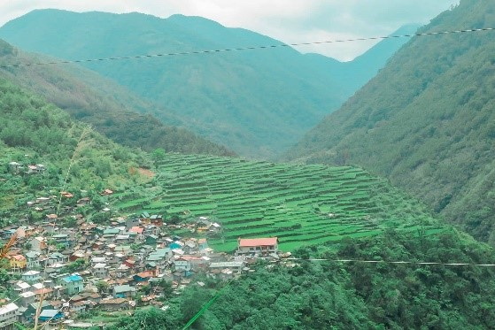
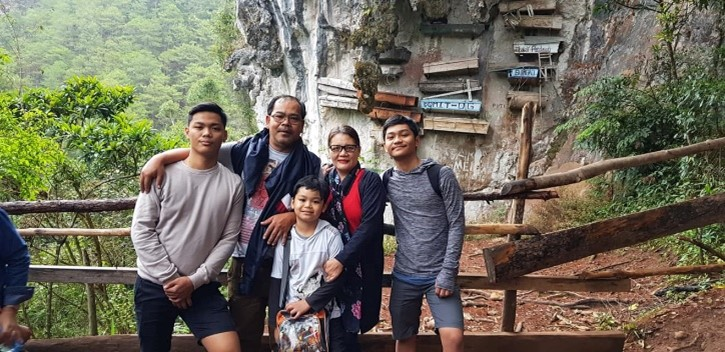
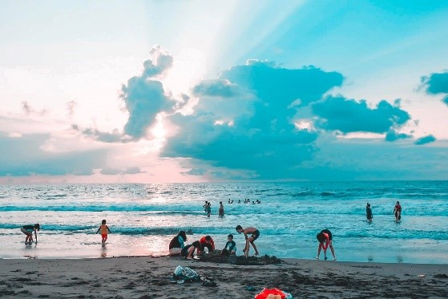
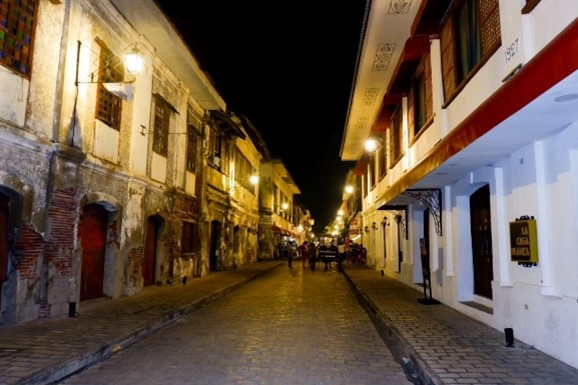
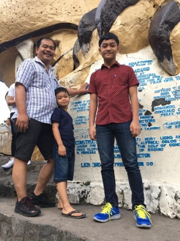
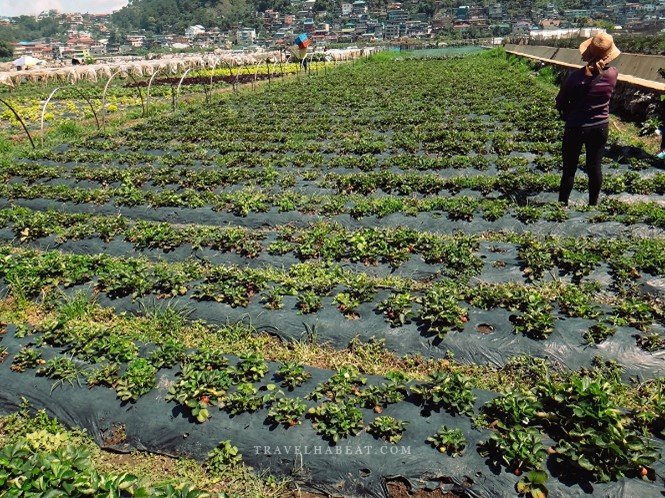
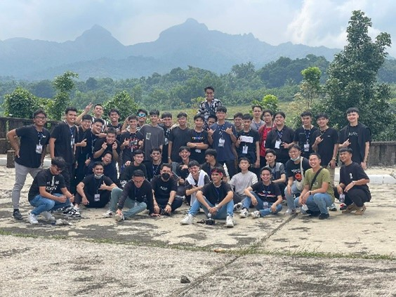
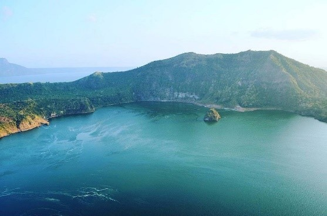
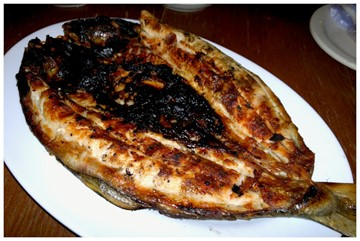

Luzon Travel Adventures
by Antonio, Kean | July 23, 2025
Why choose Luzon of all places to visit in the Philippines? Well, Luzon is one of the largest and most populated islands in the Philippines. It holds a rich history where Filipino and Spanish cultures intertwined for over 300 years, resulting in a unique blend of traditions, architecture, and cuisine. From the rugged mountain ranges of the north to the stunning beaches of the south, Luzon offers sights and experiences you won't find anywhere else in the world. This article will help you decide which destinations in Luzon are worth visiting, not just based on popularity, but also from my own personal experience.
Sagada


Sagada is a trip to the mountain regions of Luzon where you need to bundle up and pack your jacket, as the temperatures within the mountain range get cold compared to the rest of the Philippines. Prepare your hiking gear if you want to experience the unique way the Igorot treats their dead, as they believe the higher you are buried, the closer you are to heaven. The Banaue Rice Terraces, which have been used for thousands of years by the people of Sagada for farming, are truly a sight to behold.
Ilocos Sur


Ilocos Sur has beautiful beaches for people who love to swim, surf, or sunbathe. It also has many national heritage sites, such as Calle Crisologo, which showcases the influence of Spanish culture on Philippine architecture. Visitors can also enjoy local cuisine, explore old churches, and visit museums.
Benguet


Benguet is similar to Sagada, as it is nestled between mountain ranges, so don’t forget to pack your jacket. It is known for its scenic mountain views and strawberries, a rare fruit grown specifically in Baguio, which is a must-try for Filipinos visiting the area for the first time. Visitors can also enjoy the cool weather, ride horses, explore local markets, experience traditional culture, and take in the relaxing mountain atmosphere all around.
Batangas


Batangas is home to one of the most unique volcanoes in the world. Taal Volcano is an island volcano situated in a lake within an island. The Chapel on the Hill in Batulao offers one of the most amazing views, where you can see Mount Taal and the Batulao mountain range at the same time, while also taking in the vast plains beyond. Tourists can enjoy lakeside activities, explore heritage towns, try local delicacies, visit diving spots, and take peaceful countryside road trips around the province.
Pangasinan

Pangasinan is home to the famous Hundred Islands, a top destination for tourists visiting the Philippines. It truly lives up to the hype, offering a fun and memorable island-hopping experience that everyone should try when in the area. Visitors can enjoy seafood-style cuisine, explore cave systems, and much more.
REFERENCES
- Lakbaypinas. (2025, June 10). Ultimate Guide to Calle Crisologo in Vigan City 2025. LakbayPinas. https://lakbaypinas.com/kayle-crisologo-calle-crisologo-vigan-city-2025/
- Guzman, A. (2021, November 4). 5 things to do in Strawberry Farm Baguio - Go travel first. Go Travel First. https://gotravelfirst.com/strawberry-farm-baguio/
- Tripadvisor. (n.d.). LAKE TAAL (2025) All You Should Know BEFORE You Go (w/ Reviews & Photos). https://www.tripadvisor.com.ph/Attraction_Review-g298446-d319910-Reviews-Lake_Taal-Batangas_City_Batangas_Province_Calabarzon_Region_Luzon.html
- Reyes, R. D. (2012, April 28). Dagupan City: Matutina’s Seafood Restaurant | Inihaw na Bangus. https://www.pinasmuna.com/2012/04/dagupan-city-matutinas-seafood.html